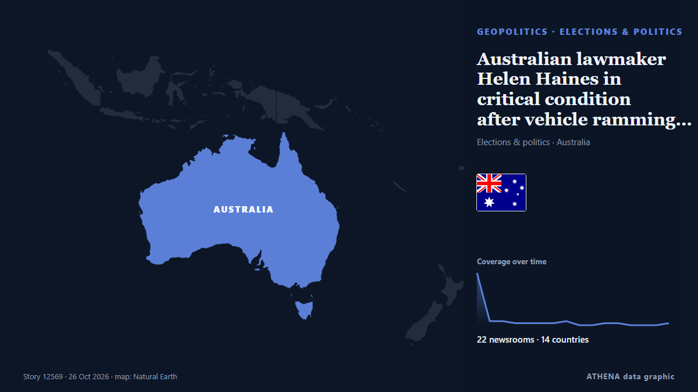

Oceania
Oceania: the latest events country by country, ranked by ATHENA with risk, sources and countries.

GeopoliticsAustralian lawmaker Helen Haines in critical condition after vehicle ramming attack
Australian MP Helen Haines was critically injured after being struck by a car outside her office. from The Jerusalem Post
Mushroom killer Erin Patterson emotionless as appeal dismissed
Mushroom killer Erin Patterson is likely to die behind bars after Victoria’s Court of Appeal quashed her bid to overturn her triple murder conviction. from Sydney Morning Herald
Australia’s High Court hears bid to overturn under-16s social media ban
Online giant Reddit and advocacy group Digital Freedom Project argue ban is unconstitutional. from Al Jazeera English
World marathon champion Peres Jepchirchir suspended for doping: AIU
Peres Jepchirchir, the world marathon champion and Olympic gold medallist, has been provisionally suspended after testing positive for EPO. from Arab News
Shell to sell NWS LNG stake to XRG
UK-based LNG giant Shell has agreed to sell its stake in the Woodside-led North West Shelf LNG project in Western Australia to Adnoc’s investment unit XRG. from LNG Prime
Former Grand Slam winner Wawrinka ends tennis career
Stan Wawrinka bid farewell to tennis as he brought the curtain down on a decorated 24-year career following a first-round exit at the Basel Open on Tuesday. from Vanguard